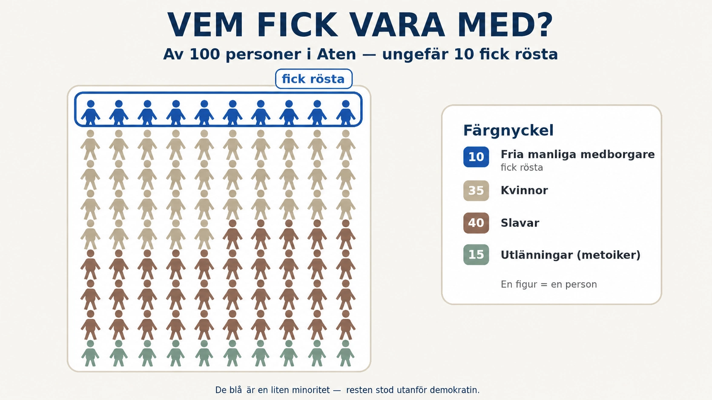

Standardtexten är ärlig på en punkt som är lätt att glömma: guldåldern var inte gyllene för alla. Aten hade slavar, kvinnor saknade politisk makt, och staden härskade hårt över andra. Den där meningen förtjänar att packas upp, för den handlar om något viktigt — vem som betalade för det som brukar hyllas som demokratins och filosofins storhetstid. Svaret är obekvämt: friheten och den lediga tiden som gjorde guldåldern möjlig vilade på människor som själva var ofria.

Slaveriet bar upp allt. I Aten fanns mycket stora mängder slavar — enligt vissa uppskattningar nästan lika många som de fria. De arbetade i hemmen, på åkrarna, i verkstäderna och i de fruktansvärda silvergruvorna utanför staden. Och det är just här kopplingen blir tydlig: en fri atensk medborgare hade tid att sitta en hel dag i folkförsamlingen, diskutera filosofi på torget eller se en teaterpjäs — därför att någon annan gjorde arbetet under tiden. Den lediga tid som guldåldern byggde på var inte gratis. Den köptes med andras ofrihet. Slavarna kom oftast från krig och handel: besegrade folk och människor köpta på slavmarknader runt Medelhavet. De hade inga rättigheter och kunde köpas och säljas som vilken egendom som helst.
Kvinnorna stod utanför politiken. Ordet demokrati betyder folkstyre — men "folket" var bara de fria manliga medborgarna. Kvinnor räknades inte. I Aten kunde en kvinna inte rösta, inte tala i folkförsamlingen och i praktiken inte äga eller styra över egendom på egen hand; hon stod hela livet under en manlig förmyndare, först sin far, sedan sin man. Hennes plats var hemmet, där hon skötte hushållet och barnen — ett viktigt arbete, men utan röst i samhället utanför. De kvinnor vi känner till vid namn från antikens Aten är få, och vi hör nästan aldrig deras egna ord.
Men det såg olika ut i olika städer. Här finns en intressant vändning som visar hur mycket stadsstat skilde sig från stadsstat. I Sparta hade kvinnorna betydligt större frihet än i Aten. De tränade idrott, rörde sig fritt, kunde äga och ärva jord, och sägs ha talat rakt och självständigt på ett sätt som förvånade och ibland chockade andra greker. Skälet var praktiskt: när männen ständigt var borta i krig eller militär träning fick kvinnorna sköta gårdarna och egendomen. Så den grekiska kvinnans liv berodde mycket på var hon råkade födas. Det finns ingen enda "grekisk kvinna" — det fanns den atenska och den spartanska, och de levde helt olika liv.
Och utlänningarna? Även fria människor kunde stå utanför. I Aten fanns många metoiker — fria invandrare från andra grekiska städer eller längre bort. De fick bo och arbeta i staden, och skötte en stor del av handeln och hantverket, men de blev nästan aldrig medborgare och fick inte delta i politiken hur länge deras familjer än hade bott där. Medborgarskapet var en stängd klubb.
Varför vi ska minnas det här. Poängen är inte att fördöma grekerna med vår tids ögon, som om de borde ha vetat bättre — nästan alla samhällen på den tiden byggde på ofrihet av något slag. Poängen är att se hela bilden, inte bara den glänsande halvan. När vi hör "Atens demokrati" ska vi minnas att den gällde en minoritet, och att majoriteten — kvinnor, slavar, utlänningar — bar upp den utan att få vara med. Det är också därför Standardtexten är noga med att kalla Atens demokrati begränsad, och varnar för att kalla den "modern". Den var ett frö, inte en färdig blomma.
Och en sista, källkritisk eftertanke: nästan allt vi vet om guldålderns Aten är skrivet av fria män. Kvinnorna, slavarna och de utlänningar som bar upp samhället skrev sällan själva, och deras röster har till största delen gått förlorade. Precis som med Induskulturen i förra delen får vi historien berättad av dem som fick föra pennan — och det är alltid värt att fråga vilka som teg.